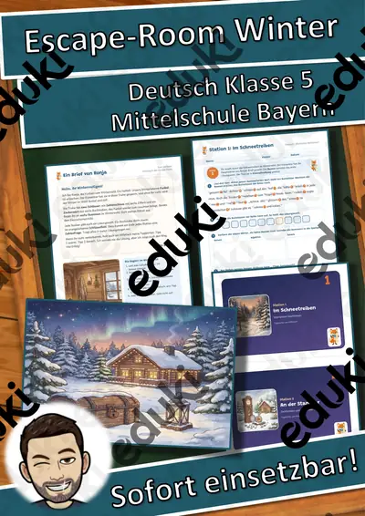

Wimmel-Werkstatt Tiere im Winter Materialpaket: 3 Einheiten – Sprachförderung und Sachwissen mit Wimmelbildern (Grundsch

Wimmel-Werkstatt Tiere im Winter Wimmel-Werkstatt Tiere im Winter – Einheit 3: Tierspuren und Winterfell im Schnee – Spr

Wimmel-Werkstatt Tiere im Winter Wimmel-Werkstatt Tiere im Winter – Einheit 1: Winterschlaf, Winterruhe und Winterstarre

Wimmel-Werkstatt Tiere im Winter Wimmel-Werkstatt Tiere im Winter – Einheit 2: Standvögel und Zugvögel im Winter – Sprac

Weihnachten: Das große Gemeinschaftsbild – 30 Felder, ein Kunstwerk für die ganze Klasse

Silvester & Neujahr: Das große Gemeinschaftsbild – 30 Felder, ein Kunstwerk für die ganze Klasse

Nikolaus: Das große Gemeinschaftsbild – 30 Felder, ein Kunstwerk für die ganze Klasse

Winterzeit-Spiele: Winter-Domino: Die Bild-Wort-Kette – Klasse 1–4

Winter Escape Room, English Year 6 (KS2): 6 Stations, 2 Locks, 1 Magic Word (FREE)

Escape-Room Winter – Deutsch Klasse 5 für die Mittelschule: 6 Stationen, 2 Schlösser, 1 Zauberwort (GRATIS)

Winterzeit-Spiele: Ich habe, wer hat? Die Weihnachts-Schleife – Klasse 1–4

Naturwerkstatt Grundschule Materialpaket: 3 Einheiten – Differenzierte Winterwerkstatt für Klasse 3 und 4 (Grundschule,

Naturwerkstatt Grundschule Naturwerkstatt Grundschule – Einheit 3: Pflanzen und Bäume in der Winterzeit – Differenzierte

Naturwerkstatt Grundschule Naturwerkstatt Grundschule – Einheit 2: Überlebensstrategien der Tiere im Winter – Differenzi

Naturwerkstatt Grundschule Naturwerkstatt Grundschule – Einheit 1: Winterwetter, Schnee und Eis – Differenzierte Winterw

Winterzeit-Spiele: Memory: Winter und Weihnachten – Bild und Wort – Klasse 1–4

Winterzeit-Spiele: Sag es nicht! Das Weihnachtswörter-Spiel – Klasse 1–4

Märchen-Werkstatt: Schneewittchen – Ausmalblätter und Domino, Klasse 1–4 (kostenlos)

Märchen-Werkstatt: Schneewittchen – Plus-Paket mit Domino, Lesen und Kleben, Lesetext, Klasse 1–4

Weihnachtsgeschichte als Domino: Religion in 2 Varianten mit Stichwörtern und Sätzen (Klasse 2–4)

Weihnachts-Logicals: 6 Knobelaufgaben zur Weihnachtsbäckerei in 3 Stufen (Klasse 3–4)

Adventskalender-Vorlage für die Klasse: 24 Türchen, Ideenkarten und Plan (Klasse 1–4)

Satzwerkstatt Winter Materialpaket: Schlangensätze, Purzelsätze, Würfelsätze – 3 Materialien in 3 Stufen (Klasse 1–2, DaZ)

Würfelsätze Winter: über 3000 Sätze würfeln und schreiben, mit Bildwürfel-Netzen in 3 Stufen (Klasse 1–3, DaZ)

Winter-Rätselwerkstatt Materialpaket: Wer bin ich? + Krimi-Rätselheft + Logicals – 3 Rätselhefte in 3 Stufen (Klasse 1–4)

Logicals „Wer ist wer?“ im Winter: 11 Logikrätsel in 3 Stufen mit Kreuztabelle und Lösungen (Klasse 2–4)

Purzelsätze Winter: 36 Wörter-Durcheinander-Sätze ordnen mit Legestreifen in 3 Stufen (Klasse 1–2, DaZ)

Krimi-Rätselheft „Der verschwundene Klassenschlitten“: eigener Fall mit Spuren, Tabelle und Geheimschrift in 3 Stufen (Klasse 2–3)
Wer bin ich? Winter-Rätsel für Kinder: 12 Rätsel in 3 Lesestufen mit Bildkarten und Rätselkarten (Klasse 1–2, DaZ)

Schlangensätze Winter: 36 Sätze trennen und schreiben in 3 Stufen mit Schlangenkarten (Klasse 1–2, DaZ)

Rechenmosaik Paket Winter, Advent und Fasching: 4 Motive, lösen – kleben – ausmalen (Klasse 1–4)

Rechenmosaik Weihnachtsbaum: Geteilt-Aufgaben (Division) – lösen, kleben, ausmalen in 3 Stufen (Klasse 3)

Rechenmosaik Adventskranz: Einmaleins 6er bis 9er – lösen, kleben, ausmalen in 3 Stufen (Klasse 3)

Rechenmosaik Schneemann: Verdoppeln und Halbieren – lösen, kleben, ausmalen in 3 Stufen (Klasse 2–3)

Winter-Lesewelten Materialpaket: 3 Einheiten – Differenziertes Lesetraining für die Grundschule (Grundschule, Klasse 1–3

Winter-Lesewelten Winter-Lesewelten – Einheit 3: Winterliche Bräuche – Differenziertes Lesetraining für die Grundschule

Winter-Lesewelten Tiere im Winter – Differenziertes Lesetraining für die Grundschule (Grundschule, Klasse 1–3)

Winter-Lesewelten Schnee und Eis – Differenziertes Lesetraining für die Grundschule (Grundschule, Klasse 1–3)

Lesewinter Materialpaket Klasse 2, 3 und 4: 30 Wintertexte in je 3 Stufen – tägliche Lesezeit, Lesefluss-Training, Hörfassung (einmal zahlen)

Lesewinter Klasse 4: 10 Wintertexte in 3 Stufen – tägliche Lesezeit, Lesefluss-Training, Tandem-Lesen, Hörfassung

Lesewinter Klasse 3: 10 Wintertexte in 3 Stufen – tägliche Lesezeit, Lesefluss-Training, Tandem-Lesen, Hörfassung

Lesewinter Klasse 2: 10 Wintertexte in 3 Stufen – tägliche Lesezeit, Lesefluss-Training, Tandem-Lesen, Hörfassung

Lesespaziergang Materialpaket: 3 Geschichten, 6-fach differenziert – Herbst, Advent, Winter (Klasse 1–4, DaZ)

Advents-Rätselreise Materialpaket Klasse 1–4: 3 Adventskalender mit Geschichten + Rätseln in 3 Stufen, QR-Audio

Lesespaziergang Auf dem Weihnachtsmarkt – 6-fach differenziert mit Bildkarten, Sternchenaufgaben und Audio (Klasse 1–4)

Laufdiktat Tiere im Winter

Laufdiktat Tiere im Winter – 15 Sachsätze in 3 Stufen, 3 Lineaturen, Quiz, Hördiktat per QR (Klasse 2–3)

Lesespaziergang Nikolausabend: Stiefel, Sterne, Plätzchenduft – 8 Stationen in 3 Lesestufen mit Hörfassung (Klasse 1–2, DaZ)

Advents-Rätselreise Klasse 3/4 – Adventskalender: 24 Geschichten + Rätsel in 3 Stufen mit Lösungssatz

Lesespaziergang Tiere im Winter: Pit, der Igel, sucht ein Bett – 8 Stationen in 3 Lesestufen mit Hörfassung (Klasse 1–2, DaZ)

Advents-Rätselreise Klasse 2 – Adventskalender: 24 Geschichten + Rätsel in 3 Stufen mit Lösungssatz

Lern-Girlande Weihnachtskugeln – Ausmal-Anhänger mit Lernauftrag in 3 Stufen (Vorschule, Klasse 1–2, DaZ)

Advents-Rätselreise Klasse 1 – Adventskalender: 24 Geschichten + Rätsel in 3 Stufen mit Lösungssatz

Lies und male Weihnachten – Leseverstehen und Ausmalen in 3 Stufen (Klasse 1–2, DaZ, Förder)

Lern-Girlande Schneekugeln – Ausmal-Anhänger mit Lernauftrag in 3 Stufen (Vorschule, Klasse 1–2, DaZ)

Würfel-Malspur Winter und Weihnachten – Würfeln, Zählen, Malen in 3 Stufen (Vorschule, Klasse 1–2)

Steckbriefe Vögel im Winter – Materialpaket (10 heimische Wintervögel, differenziert, mit Lösungen)

Winter Park Mystery Hunt - Complete Pack (BW)

The Cozy Winter Room - Complete Pack (BW)

Lesespaziergang DaZ: Spielen im Schnee – Wortschatz mit Rätseln, 3-fach differenziert (Klasse 1–4)

Materialpaket Advent für die 5. Klasse: 3 Lesespurgeschichten mit Rätselaufgaben (Weihnachtsstern, Plätzchen backen, Handnähen)

Materialpaket Winter für die 9. Klasse: 5 Lesespurgeschichten mit Rätselaufgaben fächerübergreifend (Hungerwinter 1947, Permafrost, Christbaummarkt & mehr)

Materialpaket Winter und Advent für die 8. Klasse: 10 Lesespurgeschichten mit Rätselaufgaben fächerübergreifend (Polarlichter, Streusalz, Krippenbau & mehr)

Materialpaket Winter und Advent für die 7. Klasse: 10 Lesespurgeschichten mit Rätselaufgaben fächerübergreifend (Weihnachtsoratorium, Südpol, Eishockey & mehr)

Materialpaket Advent und Winter für die 6. Klasse: 7 Lesespurgeschichten mit Rätselaufgaben (Weihnachtsbasar, Saturnalien, Lichterfeste & mehr)

Materialpaket Rechenwelten im Winter für die 4. Klasse: 5 Mathe-Rollenspiele, 3-fach differenziert (Wintertombola, Schneeburg, Paketstation & mehr)

Materialpaket Rechenwelten im Winter für die 3. Klasse: 8 Mathe-Rollenspiele, 3-fach differenziert (Weihnachtsbäckerei, Lichterpark, Eisbahn & mehr)

Materialpaket Rechenwelten im Winter für die 2. Klasse: 6 Mathe-Rollenspiele, 3-fach differenziert (Weihnachtsmarkt, Kinderkino, Lebkuchen & mehr)

Materialpaket Rechenwelten im Winter für die 1. Klasse: 5 Mathe-Rollenspiele, 3-fach differenziert (Adventsmarkt, Plätzchenbäckerei, Wildpark & mehr)

Materialpaket Winter-Lesespaziergänge für Klasse 2–4: 5 Lesespaziergänge mit Rätseln, 3-fach differenziert (Winterwald, Spuren im Schnee, Plätzchen & mehr)

Materialpaket Winter und Advent für die 4. Klasse: 5 Lesespurgeschichten mit Rätselaufgaben (Weihnachtsmarkt, Fröbelsterne, Sternbilder & mehr)

Materialpaket Schnee, Eis und Wintersport für die 3. Klasse: 10 Lesespurgeschichten mit Rätselaufgaben (Rodelbahn, Eisstock, Schneelabor & mehr)

Materialpaket Natur im Winter für die 3. Klasse: 10 Lesespurgeschichten mit Rätselaufgaben (Wintertiere, Winterwald, Schneespuren & mehr)

Materialpaket Advent und Weihnachten für die 3. Klasse: 8 Lesespurgeschichten mit Rätselaufgaben (Barbarazweige, Lebkuchen, Santa Lucia, Sternsinger & mehr)

Materialpaket Feste im Winter für die 2. Klasse: 6 Lesespurgeschichten mit Rätselaufgaben (Sankt Martin, Nikolaus, Advent, Weihnachten & Silvester)

Das Reisebüro: Winterreise in die Berge – Rollenspiel Maßstab, Kilometer und Meter, 3-fach differenziert (Klasse 4)

3D-Anhänger Winter – Oktaeder, Diamant und Kugel zum Ausmalen und Basteln, 3-fach differenziert (Klasse 3/4)

3D-Anhänger Advent – Oktaeder, Diamant und Kugel zum Ausmalen und Basteln, 3-fach differenziert (Klasse 3/4)

Lesekartei Advent – 32 Kinderfragen mit Antworten in 3 Stufen (Klasse 2–4)

Die große Winter-Umfrage – Rollenspiel Daten, Tabellen und Säulendiagramme, 3-fach differenziert (Klasse 3)

Der Spielzeugladen vor Weihnachten – Rollenspiel Münzen und Scheine bis 20 €, 3-fach differenziert (Klasse 1)

Das Weihnachtspostamt – Rollenspiel Rechnen mit Euro und Cent, gemischte Schreibweise, 3-fach differenziert (Klasse 2)

Igel im Laubnest – Klappnest basteln mit Sachtext Winterschlaf, 3-fach differenziert (Tiere im Herbst, Klasse 1/2)

Einmaleins-Malen nach Ergebnis Winter – Pinguin, Schneemann, Eule, 3-fach differenziert mit Selbstkontrolle (Klasse 2/3)

Fingerpuppen Wintertiere – Bastelvorlage mit Sachtext und Sprechaufgaben, 3-fach differenziert (Klasse 1/2)

Pop-up-Karten Weihnachten – Bastelvorlage mit Stufen-Pop-up, Motiven und Weihnachtsgruß, 3-fach differenziert (Klasse 3/4)

Wimpelkette Winter – Bastelvorlage mit Wintermotiven, Buchstaben WINTER und eigenen Wimpeln, 3-fach differenziert (Klasse 1–4)

Jesus wird geboren – die Weihnachtsgeschichte nach Lukas mit Bildgeschichte, 3-fach differenziert (Religion Klasse 1/2)

Stadt, Land, Winter – Wörterspiel mit Buchstaben-Drehscheibe, 3-fach differenziert (Deutsch Klasse 2–4)

Advents-Häuserstadt – Klassen-Adventskalender zum Basteln mit 24 Adventsaufgaben, 3-fach differenziert (Klasse 1–4)

Würfelkunst Winter – Tannenbaum-Muster erwürfeln und zeichnen, 3-fach differenziert (Klasse 2–4)

Gemeinschaftsposter Winter „Gemeinsam leuchten wir“ – Klassenposter aus 24 Teilen, 3-fach differenziert (Klasse 1–4)

Papier-Schneeflocken falten und schneiden – Winter-Bastelvorlage mit Sachtext, 3-fach differenziert (Klasse 2/3)

Das Schneeburg-Baubüro – Rollenspiel Würfelbauten, Baupläne und Rauminhalt, 3-fach differenziert (Klasse 4)

Das Glücksrad der Wintertombola – Rollenspiel Gewinnchancen und Wahrscheinlichkeit, 3-fach differenziert (Klasse 4)

Der Wintersporttag – Rollenspiel Sekunden, Minuten und Sekunden umwandeln, Rangliste, 3-fach differenziert (Klasse 4)

Der Hofladen im Winter – Rollenspiel Hohlmaße l und ml, 3-fach differenziert (Klasse 4)

Der Weihnachtszirkus – Rollenspiel Division mit Rest, 3-fach differenziert (Klasse 3)

Der Lichterpark in der Winternacht – Rollenspiel Zahlenraum bis 1000, halbschriftlich und schriftlich rechnen, 3-fach differenziert (Klasse 3)

Die Schlittenbahn-Baustelle – Rollenspiel Längen km, m, cm und mm, 3-fach differenziert (Klasse 3)

Der Obststand auf dem Adventsmarkt – Rollenspiel Rechnen mit Geld bis 20 €, Rückgeld, 3-fach differenziert (Klasse 1)

Winter Wildlife Trail – Lesespurgeschichte mit Rätselaufgaben auf Englisch (Klasse 6)

Umtausch nach Weihnachten – Gewährleistung, Garantie und Kulanz – Lesespurgeschichte mit Rätselaufgaben (Klasse 8)

Richtig lüften im Winter – Luftfeuchtigkeit, Taupunkt und Schimmel – Lesespurgeschichte mit Rätselaufgaben (Klasse 9)

Lesespaziergang: Obst und Gemüse im Winter – 3-fach differenziert (★/★★/★★★), Klasse 2–4

Lesespaziergang: Spuren im Schnee – 3-fach differenziert (★/★★/★★★), Klasse 2–4

Die Schneemann-Werkstatt – Rollenspiel Längen m und cm, 3-fach differenziert (Klasse 2)

Lesespaziergang: Plätzchen backen im Advent – 3-fach differenziert (★/★★/★★★), Klasse 2–4

Das Kinderkino im Winter – Rollenspiel Einmaleins und Verteilen, 3-fach differenziert (Klasse 2)

Am Bahnhof in den Winterferien – Rollenspiel Uhrzeit und Zeitspannen, 3-fach differenziert (Klasse 2)

Die Weihnachtsbäckerei – Rollenspiel Gewichte kg und g, Rezepte verdoppeln, 3-fach differenziert (Klasse 3)

Winterfütterung im Wildpark – Rollenspiel Zahlen bis 20 zählen, zerlegen und ergänzen, 3-fach differenziert (Klasse 1)

Paketstation im Advent – Rollenspiel Gewichte kg, g und t, Malnehmen mit Größen, 3-fach differenziert (Klasse 4)

Winterspiele im Schulhof – Rollenspiel Strichlisten, Vergleichen, sicher – möglich – unmöglich, 3-fach differenziert (Klasse 1)

Lesespaziergang: Tiere im Winterwald – 3-fach differenziert (★/★★/★★★), Klasse 2–4

Die Bude am Weihnachtsmarkt – Rollenspiel Rechnen mit Geld, Euro und Cent, 3-fach differenziert (Klasse 2)

Die Plätzchenbäckerei – Rollenspiel Zahlen bis 20, Verdoppeln und Halbieren, 3-fach differenziert (Klasse 1)

Rechnen im Winter-Café – Rollenspiel Rechnen mit Geld, 3-fach differenziert (Klasse 2–4)

Das Frühlingsfest – Neujahr in China – Lesespurgeschichte mit Rätselaufgaben (Klasse 5)

Sternbilder am Winterhimmel – Orion, Großer Wagen und Polarstern – Lesespurgeschichte mit Rätselaufgaben (Klasse 4)

Die Christrose – eine Blume blüht im Schnee – Lesespurgeschichte mit Rätselaufgaben (Klasse 6)

Der Weihnachtsstern – eine Pflanze aus Mexiko – Lesespurgeschichte mit Rätselaufgaben (Klasse 5)

Weihnachtsgewürze – Zimt, Nelke, Vanille & Co. – Lesespurgeschichte mit Rätselaufgaben (Klasse 6)

Die Saturnalien – das Winterfest der Römer – Lesespurgeschichte mit Rätselaufgaben (Klasse 6)

Glocken – vom Guss bis zum Geläut – Lesespurgeschichte mit Rätselaufgaben (Klasse 5)

Das Weihnachtsoratorium – Chor, Arie und Rezitativ – Lesespurgeschichte mit Rätselaufgaben (Klasse 7)

Ein Winter im Dorf des Mittelalters – Bauern und Grundherr – Lesespurgeschichte mit Rätselaufgaben (Klasse 7)

Paketflut im Advent – ein Tag im Paketzentrum – Lesespurgeschichte mit Rätselaufgaben (Klasse 8)

Winterblues – warum uns im Winter das Licht fehlt – Lesespurgeschichte mit Rätselaufgaben (Klasse 8)

Die Wintersonnenwende – warum der Dezember so dunkel ist – Lesespurgeschichte mit Rätselaufgaben (Klasse 7)

Kältebus und Wärmestube – Hilfe für wohnungslose Menschen im Winter – Lesespurgeschichte mit Rätselaufgaben (Klasse 9)

Wichern und der Adventskranz – Hilfe für Kinder in Not – Lesespurgeschichte mit Rätselaufgaben (Klasse 7)

Streusalz und Gefrierpunkt – warum Salz Eis schmelzen lässt – Lesespurgeschichte mit Rätselaufgaben (Klasse 8)

Krippenbau – eine Weihnachtskrippe entwerfen und gestalten – Lesespurgeschichte mit Rätselaufgaben (Klasse 8)

Regional oder importiert – Obst und Gemüse im Winter – Lesespurgeschichte mit Rätselaufgaben (Klasse 7)

Weihnachten in anderen Ländern – Bräuche rund um die Welt – Lesespurgeschichte mit Rätselaufgaben (Klasse 2)

Barbarazweige – der Brauch am 4. Dezember – Lesespurgeschichte mit Rätselaufgaben (Klasse 3)

Silvester und Neujahr – Bräuche zum Jahreswechsel – Lesespurgeschichte mit Rätselaufgaben (Klasse 2)

Advent – warten auf Weihnachten – Lesespurgeschichte mit Rätselaufgaben (Klasse 2)

Die Sternsinger – Brauch am Dreikönigstag – Lesespurgeschichte mit Rätselaufgaben (Klasse 3)

Santa Lucia – das Lichterfest im Dezember – Lesespurgeschichte mit Rätselaufgaben (Klasse 3)

Weihnachtsplätzchen backen – Teig, Maße und Hygiene – Lesespurgeschichte mit Rätselaufgaben (Klasse 5)

Handnähen – Säckchen für den Adventskalender – Lesespurgeschichte mit Rätselaufgaben (Klasse 5)

Die Weihnachtsgeschichte – Herberge, Hirten, Sterndeuter – Lesespurgeschichte mit Rätselaufgaben (Klasse 2)

Nikolaus von Myra – Legende und Brauch – Lesespurgeschichte mit Rätselaufgaben (Klasse 2)

Lichterfeste in den Religionen – Diwali, Chanukka, Martinstag, Advent – Lesespurgeschichte mit Rätselaufgaben (Klasse 6)

Ein Schlitten nach eigenem Plan – zeichnen, bauen, testen – Lesespurgeschichte mit Rätselaufgaben (Klasse 3)

Was eine Gemeinde alles leistet – von Wasser bis Winterdienst – Lesespurgeschichte mit Rätselaufgaben (Klasse 6)

Markt und Preis – Angebot und Nachfrage am Christbaummarkt – Lesespurgeschichte mit Rätselaufgaben (Klasse 9)

Der Weihnachtsbasar – planen, kalkulieren, verkaufen – Lesespurgeschichte mit Rätselaufgaben (Klasse 6)

Schlittschuhlaufen – sicher übers Eis gleiten – Lesespurgeschichte mit Rätselaufgaben (Klasse 6)

Winterklänge – Musik im Schnee – Lesespurgeschichte mit Rätselaufgaben (Klasse 1)

Weihnachtslieder – Musik im Advent – Lesespurgeschichte mit Rätselaufgaben (Klasse 3)

Der leise Winterwald – Lesespurgeschichte mit Rätselaufgaben (Klasse 3)

Die grüne Kugel im Winterbaum – Lesespurgeschichte mit Rätselaufgaben (Klasse 3)

Das süße Wintergemüse – Lesespurgeschichte mit Rätselaufgaben (Klasse 3)

Der kahle Winterbaum – Lesespurgeschichte mit Rätselaufgaben (Klasse 3)

Weiß wie der Schnee – Lesespurgeschichte mit Rätselaufgaben (Klasse 3)

Der frostige Wintermorgen – Lesespurgeschichte mit Rätselaufgaben (Klasse 3)

Das Winter-Zielwerfen – Lesespurgeschichte mit Rätselaufgaben (Klasse 3)

Fit durch den Winter – Lesespurgeschichte mit Rätselaufgaben (Klasse 3)

Die Weihnachtsstube – Lesespurgeschichte mit Rätselaufgaben (Klasse 3)

Das Winterquartier – Lesespurgeschichte mit Rätselaufgaben (Klasse 3)

Die Schneespur – Lesespurgeschichte mit Rätselaufgaben (Klasse 3)

Der Winterdienst – Lesespurgeschichte mit Rätselaufgaben (Klasse 3)

Die Schneekanone – Lesespurgeschichte mit Rätselaufgaben (Klasse 3)

Das Schneelabor – Lesespurgeschichte mit Rätselaufgaben (Klasse 3)

Der Wintersee – Lesespurgeschichte mit Rätselaufgaben (Klasse 3)

Die Schneeschuhwanderung – Lesespurgeschichte mit Rätselaufgaben (Klasse 3)

Der Christbaumhof – Lesespurgeschichte mit Rätselaufgaben (Klasse 3)

Die Winterfütterung – Lesespurgeschichte mit Rätselaufgaben (Klasse 3)

Die Kerzenwerkstatt – Lesespurgeschichte mit Rätselaufgaben (Klasse 3)

Der Winterreifen – Lesespurgeschichte mit Rätselaufgaben (Klasse 8)

Der Winterschlaf – Lesespurgeschichte mit Rätselaufgaben (Klasse 7)

Der Pinguin – Lesespurgeschichte mit Rätselaufgaben (Klasse 8)

Die Kerze – Lesespurgeschichte mit Rätselaufgaben (Klasse 8)

Der Weihnachtsmarkt – Lesespurgeschichte mit Rätselaufgaben (Klasse 4)

Schneeberg Lückentext mit Wortspeicher Hörverstehen und Suchsel

Silvester Lückentext mit Wortspeicher Hörverstehen und Suchsel

Schneewittchen Lückentext mit Wortspeicher Hörverstehen und Suchsel

Schneemann Lückentext mit Wortspeicher Hörverstehen und Suchsel

Schneeleopard Lückentext mit Wortspeicher Hörverstehen und Suchsel

Schneekanone Lückentext mit Wortspeicher Hörverstehen und Suchsel

Schneeglöckchen Lückentext mit Wortspeicher Hörverstehen und Suchsel

Schnee-Eule Lückentext mit Wortspeicher Hörverstehen und Suchsel

Schnee Lückentext mit Wortspeicher Hörverstehen und Suchsel

Pinguine Lückentext mit Wortspeicher Hörverstehen und Suchsel

Winterthur Lückentext mit Wortspeicher Hörverstehen und Suchsel

Wintersport Lückentext mit Wortspeicher Hörverstehen und Suchsel

Winterschlaf Lückentext mit Wortspeicher Hörverstehen und Suchsel

Winter Lückentext mit Wortspeicher Hörverstehen und Suchsel

Weihnachtsmann Lückentext mit Wortspeicher Hörverstehen und Suchsel

Weihnachtslied Lückentext mit Wortspeicher Hörverstehen und Suchsel

Weihnachtsgeschichte Lückentext mit Wortspeicher Hörverstehen und Suchsel

Weihnachten Lückentext mit Wortspeicher Hörverstehen und Suchsel

Frost Lückentext mit Wortspeicher Hörverstehen und Suchsel

Neujahr Lückentext mit Wortspeicher Hörverstehen und Suchsel

Eisbär Lückentext mit Wortspeicher Hörverstehen und Suchsel

Advent Lückentext mit Wortspeicher Hörverstehen und Suchsel

Adventsgeschichten - Grundschule - 24 Adventsgeschichten

Abstrakte Winterbilder - Winter-Bilder zum Ausmalen - Winterkunst - Klassenzimmerdekoration - Fensterbilder - Ausmalbilder

Winter-Schneeflocken - Kunst - Klassenzimmergestaltung - Ausmalbilder

Pixelbilder Weihnachten (Kunst, Vertretung, Konzentrationsübung)

EDV/Informatik/Word: Word Formatierung - Schneeflöckchen